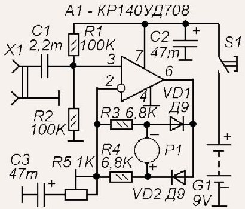
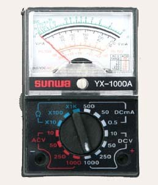

Милливольтметр переменного тока-1
Если у Вас есть микросхема КР140УД708 то Вы своими руками можете собрать низкочастотный милливольтметр с помощью которого можно измерять уровни напряжений в каскадах усилителей звуковой частоты и в других низкочастотных цепях с частотой до 50 кГц и напряжением до 300 мВ. Схема низкочастотного милливольтметра показана на рисунке 1.

Рис. 1 - Схема низкочастотного милливольтметра
Микроамперметр Р1 применен от китайского мультиметра типа MF-110 или аналогичные. В корпусе от этого мультиметра монтируют схему прибора собранной на печатной плате. Внешний вид корпуса мультиметра изображен на рисунке 2.

Рис. 2 - Мультиметр YX-1000A
Батарейный отсек низкочастотного милливольтметра следует переделать чтобы в него помещалась батарея "Крона".
Источники
radio-ostrovok.jimdo.com - Низкочастотный милливольтметр своими руками